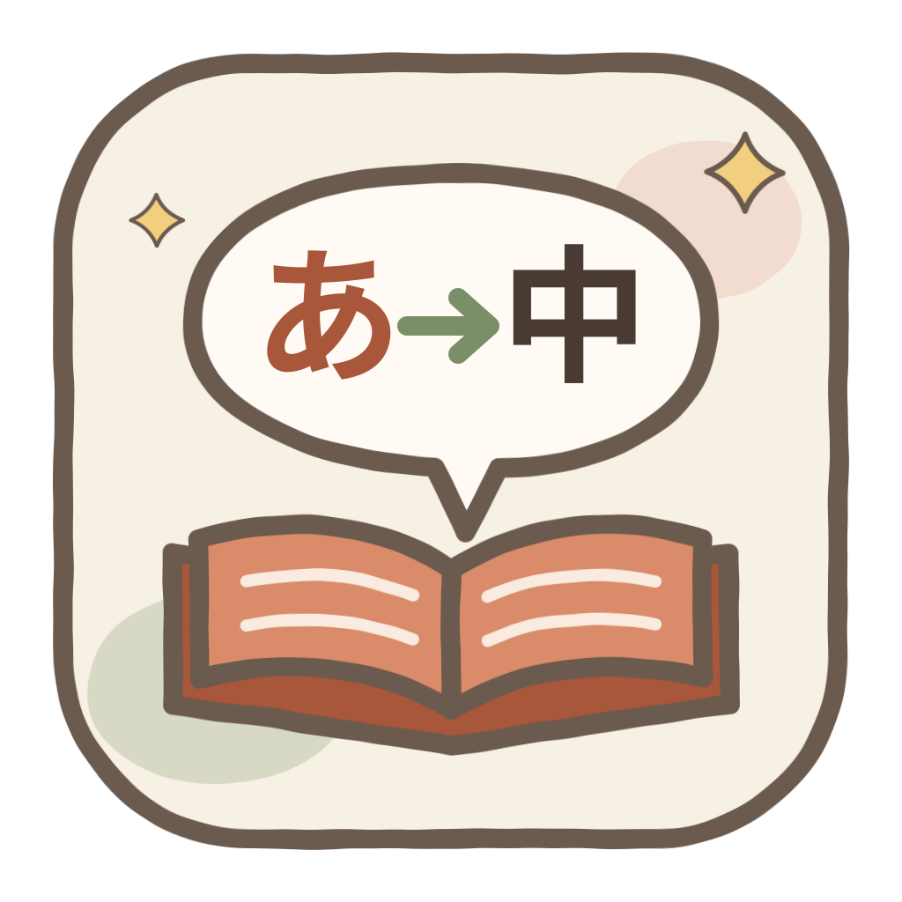
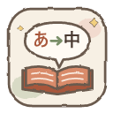
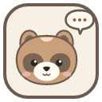

Yomitokiよみとき・讀解
溫暖手繪 × 日系編輯排版。這頁直接讀取 ui/src/styles/tokens.css 與 assets/，改動 token 或替換素材後重新整理即可看到結果。
色票
元件
已完成
待確認 3
翻譯中
第 12 話・24 頁 — 次要文字示範，上次閱讀於昨天
字體
中文・jf open 粉圓把看不懂的漫畫讀懂
英文標題・FrauncesA cozy little reading room
英文內文・NunitoTranslate the pages you capture, keep names consistent, read at your own pace.
手寫點綴・Caveatnew word! please check ✎
圖示
16
32

48
128
插件 16
插件 48

插件 128
可替換素材
把同名檔案放進 文件\Yomitoki\custom-assets\ 就會取代預設圖片（SVG、PNG、WebP）。